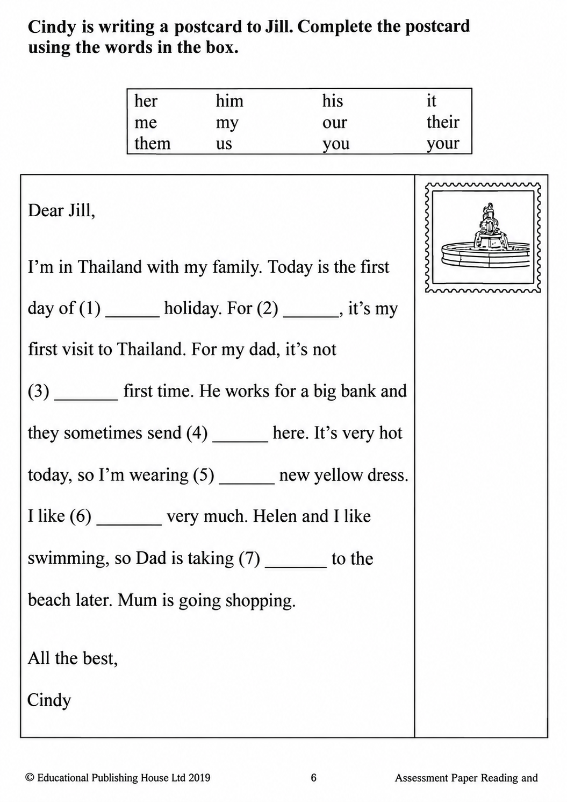

已掌握
| # | 中文意思 | 例句/提示 | 英文默写 | 已掌握 |
|---|---|---|---|---|
| noun 名词 | ||||
| 1 | 历史 | I like learning about . | ||
| 2 | 大厅 | We meet in the school . | ||
| 3 | 班长 | The helps the teacher. | ||
| 4 | 机器人 | The can move. | ||
| 5 | 窗户 | Open the , please. | ||
| 6 | 周四 | We have art on . | ||
| 7 | 周五 | The school trip is on . | ||
| 8 | 肉类 | I eat for dinner. | ||
| verb 动词 | ||||
| 9 | 待在 | I at home on rainy days. | ||
| 10 | 邀请 | I my friend to my home. | ||
| 11 | 讨厌 | I noisy places. | ||
| phrase 短语 | ||||
| 12 | 在……和……之间 | The park is the bank the school. | ||
| 13 | 照相 | I of my cat. | ||
| noun phrase 名词短语 | ||||
| 14 | 礼堂 | We sing together in the . | ||
| adjective 形容词 | ||||
| 15 | 感到无聊的 | I feel on rainy days. | ||
| 16 | 勤劳的，勤奋的 | She is a student. | ||
| 17 | 聪明 | The child solves the problem. | ||
| adverb 副词 | ||||
| 18 | 通常 | I have breakfast at seven. | ||
| uncategorized 未分类 | ||||
| 19 | 借用 | May I your pencil? | ||
| 20 | 地址 | Please write your on the envelope. | ||
| # | 单词/词组 | 中文意思 | 例句/说明 | 已掌握 |
|---|---|---|---|---|
| adjective 形容词 | ||||
| 1 | correct | This answer is correct. | ||
| 2 | fantastic | The show was fantastic. | ||
| 3 | naughty | The naughty puppy runs around. | ||
| 4 | delicious | The soup is delicious. | ||
| 5 | excited | I was very excited on the first night. | ||
| noun 名词 | ||||
| 6 | riddle | I can solve the riddle. | ||
| 7 | webpage | This webpage has many pictures. | ||
| 8 | Australia | Australia is a big country. | ||
| 9 | sausage | I eat a sausage for breakfast. | ||
| 10 | hamster | The hamster sleeps in its cage. | ||
| 11 | turtle | A turtle walks slowly. | ||
| 12 | blog | I write about my school life on my blog. | ||
| 13 | reindeer | The reindeer is walking in the snow. | ||
| 14 | choir | My sister sings in the school choir. | ||
| 15 | volunteer | A volunteer helps us plant trees. | ||
| 16 | workplace | A school is a teacher's workplace. | ||
| 17 | timetable | The timetable shows my classes. | ||
| 18 | spelling | I checked the spelling of the word. | ||
| 19 | sugar | There's some sugar in the cupboard. | ||
| 20 | cinema | We watched a film at the cinema. | ||
| 21 | Chinese | Some pupils like Chinese. | ||
| 22 | PE | He's good at PE. | ||
| verb 动词 | ||||
| 23 | complete | Please complete the sentence. | ||
| 24 | add | Add some pepper to the soup. | ||
| phrase 短语 | ||||
| 25 | ice lollies | We eat ice lollies on hot days. | ||
| verb phrase 动词短语 | ||||
| 26 | playing with dolls | My sister likes playing with dolls. | ||
| 27 | study for my exams | I was sick so I didn't study for my exams. | ||
| 28 | eat moon cakes | We eat moon cakes at the Mid-Autumn Festival. | ||
| 29 | watch dragon boat races | We watch dragon boat races every year. | ||
| uncategorized 未分类 | ||||
| 30 | refuse | I refuse to tell a lie. | ||
| # | 中文意思 | 例句/提示 | 英文默写 | 已掌握 |
|---|---|---|---|---|
| time/date 时间日期 | ||||
| 1 | 六月 | is the sixth month. | ||
| 2 | 星期三 | is a weekday. | ||
| 3 | 星期五 | is a weekday. | ||
| numbers 数字 | ||||
| 4 | 5 | is 5. | ||
| 5 | 6 | is 6. | ||
| 6 | 8 | is 8. | ||
| 7 | 10 | is 10. | ||
| 8 | 20 | is 20. | ||
| 9 | 30 | is 30. | ||
| 10 | 百 | One is 100. | ||
| ordinal numbers 序数 | ||||
| 11 | 第二 | This is the shape. | ||
| solid shape 立体图形 | ||||
| 12 | 三棱锥 | A has triangular faces. | ||
| 13 | 底 | The is at the bottom. | ||
| 14 | 面 | A cube has six . | ||
| plane shape 平面图形 | ||||
| 15 | 正方形 | A has four equal sides. | ||
| # | 单词/词组 | 中文意思 | 例句/说明 | 已掌握 |
|---|---|---|---|---|
| operations 运算 | ||||
| 1 | addition | Addition means putting numbers together. | ||
| 2 | carrying | Carrying helps when the ones make ten. | ||
| 3 | be left | How many apples will be left? | ||
| geometry 几何 | ||||
| 4 | perpendicular line | Perpendicular lines meet at a right angle. | ||
| 5 | parallel | Parallel lines never meet. | ||
| 6 | adjacent side | These are adjacent sides. | ||
| 7 | identical | These two triangles are identical in shape and size. | ||
| 8 | dotted line | Draw a dotted line between the two points. | ||
| shape 形状 | ||||
| 9 | circle | Draw a circle around the answer. | ||
| place value 位值 | ||||
| 10 | 5-digit number | 12,345 is a 5-digit number. | ||
| comparison 比较 | ||||
| 11 | less | 8 is less than 10. | ||
| 12 | more | 8 is more than 5. | ||
| 13 | fewer | There are fewer apples in this box. | ||
| 14 | fewest | Which group has the fewest? | ||
| 15 | heavier | A 3 kg bag is heavier than a 2 kg bag. | ||
| time/date 时间日期 | ||||
| 16 | hour hand | At three o'clock, the hour hand points to 3. | ||
| 17 | common year | A common year has 365 days. | ||
| 18 | second hand | The second hand goes around the clock once in one minute. | ||
| quantity 数量 | ||||
| 19 | pair | A pair means two things together. | ||
| position 位置 | ||||
| 20 | below | The box is below the table. | ||
| operations calculation 运算 | ||||
| 21 | subtract A from B | "Subtract A from B" means B - A. | ||
| 22 | mixed operations | Mixed operations use more than one operation. | ||
| 23 | expression | Write the expression in horizontal form. | ||
| 24 | checking | Checking by addition shows that 9 - 4 = 5 is correct: 5 + 4 = 9. | ||
| currency money 货币 | ||||
| 25 | dollar | One dollar has 100 cents. | ||
| measurement 测量 | ||||
| 26 | measure | We measure the length with a ruler. | ||
| 27 | gram | One gram is one thousandth of a kilogram. | ||
| 句型结构 | ||||
| 28 | ... is to the east of ... | The school is to the east of the park. | ||
| 29 | ... is to the south of ... | The library is to the south of the shop. | ||
| plane shape 平面图形 | ||||
| 30 | upper base | The upper base of this trapezium is 4 cm long. | ||
